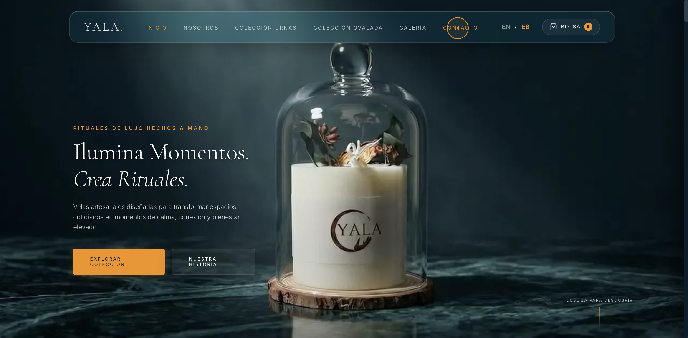
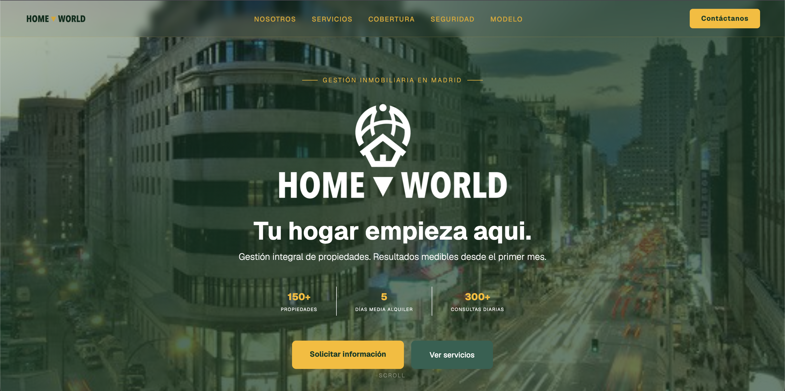

Desarrollo Web UI/UX
Sitios Web a Medida.
Pasa el cursor para revelar la interfaz de usuario en vivo y haz clic para experimentar el sitio web oficial del cliente con una transición fluida.
RITUALES DE LUJO HECHOS A MANO
YALA

YALACANDLES.COM
Visitar Sitio
GESTIÓN INMOBILIARIA EN MADRID
HOME WORLD

HOMEWORLD.COM
Visitar Sitio
EL CORAZÓN INFORMATIVO DEL PACÍFICO
MAGAZÍN PACÍFICO

magazinpacifico.com
En Construcción
Próximo Proyecto